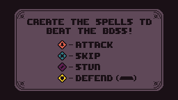
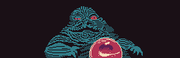

SpaceRim
- Made for
- A castle game jam, as Limpero Studios, October 2023 ?
- Genre
- Rhythm boss battles
- Engine
- Godot 4.1, with MIDI-driven beats
- My part
- ?
- Team
- ?
Beat the boss
SpaceRim is a rhythm game made of boss fights. The music is the attack pattern: the beats arrive along a timeline, and every beat is an action.

QUESTION FOR OMARWhat was the jam, and its theme? And who was Limpero Studios? I found the project as "LimperoStudiosCastleJam" but nothing about the team.
Four kinds of beat
Each beat on the timeline carries a sign, and the player builds spells by answering them in time:
- Attack hits the boss.
- Skip lets a beat pass.
- Stun stops the boss for a moment.
- Defend is held down, and blocks what comes back.
The beats aren't placed by hand on a chart: the game reads the song's MIDI file and spawns a marker for every note on the right channel, so the level is literally the score.
QUESTION FOR OMARI guessed what Stun and Defend do from the tutorial screen; please correct them. And is it right that the levels are generated from the MIDI tracks? It's the most interesting technical choice in the project, if so.
The bosses
Every boss is a parody of someone you've met somewhere else.

QUESTION FOR OMARDid you draw the bosses? Who made the music?